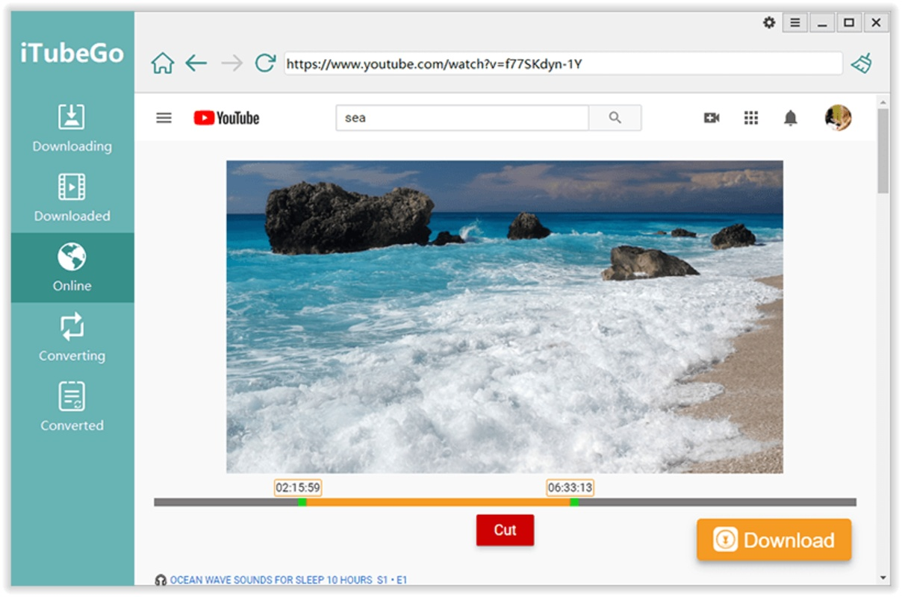

装了 iTubeGo 一周，我把 YouTube 播放列表一次性拉回了家
之前用四五个下载器拼着凑活，换了 iTubeGo 才发现一个工具能把下载、转音频、直播录制全包了——七天深度用下来聊聊真实体验。
说实话我装 iTubeGo 纯属被逼的。之前为了离线看东西，电脑上同时挂着三四个工具：YouTube 用 4K Downloader、B 站用另一个、音乐转 MP3 再开个转换器，每次整理素材都要切来切去，烦得要死。某天想把一个订阅了半年的 YouTube 播放列表全拉回来，才发现没有一个工具能从头到尾给我办完这一件事——要么播放列表下载只支持公开视频，要么下载完还要另开转换工具抽音频轨。
iTubeGo 就是这时候出场的。去它的官网扫了一眼，支持的网站清单比我预期的宽得多，装的时候没抱太大期待，毕竟这类下载器我用过不止一个，大多是"功能说得多、用起来处处卡"。但用了一个星期之后，我现在那三四个工具全关了。
安装和界面：第一眼就赢了
安装包从官方下载拿的，体积不大，双击走完流程，打开主界面是五个并排的 Tab：Download（下载）、Converter（转换）、Built-in Browser（内置浏览器）、Cutter（裁剪）、Recorder（录制）。说实话第一眼觉得 Tab 多，有点密，但用了两天就发现这个布局是真的顺手——不用在不同窗口之间跳，一个界面内能完成从下载到裁剪的全流程。
默认设置直接能开用，不需要注册账号，也没有广告弹窗。Turbo 加速模式默认关掉的，我开了之后下载速度确实上去了，同一个视频比 4K Downloader 快了大概 30%，机器风扇也没怎么转。对了，它有个"10 路并发"的上限，批量拉播放列表的时候这个数字挺狠——我那 87 个视频的播放列表，设了 8 并发，一个多小时就全拉完了。

实际用下来，挑三个最值得说的
播放列表批量下载，终于不用一个个点了
这个是我装它的直接原因。之前用 4K Downloader 下播放列表，列表里只要有一个视频因为权限或地区限制下不了，整个队列就卡着——要么跳过要么手动处理，87 个视频里有 3 个卡了，我硬等了二十分钟。
iTubeGo 下播放列表的时候，跳过失败视频是自动的，下完还能给我导一份日志。更重要的是它支持按频道全量抓——你关注了一个频道，想把历史视频都拉回来，粘贴频道主页 URL 就行，它会自己翻页解析。这个功能我用来抓了一个 Twitch 主播的回放合集，之前用其他工具要一个个回放粘贴 URL，现在一次搞定。
有个小细节挺戳我的：下载的时候格式下拉框直接能选 MP3，也就是说你本来就只想拿音频的话，它根本不会去下载视频画面的那部分数据——省带宽又省硬盘。之前用别的工具下纯音乐视频，先拉完整 MP4 再转 MP3，白白浪费时间和空间。
内置浏览器解决了我 Facebook 视频的痛点
这个功能我之前没在意，直到有一次想拉朋友在 Facebook 群组里发的一个教程视频——粘贴 URL 直接失败，弹了个提示说要在内置浏览器里打开。我当时还在想，内置浏览器能靠谱到哪去？结果点进去登录完，视频页面右下角直接出现了橙色下载按钮，点一下就进下载队列了。
简单说就是：需要登录态的网站，直接粘贴 URL 十有八九要失败，必须在内置浏览器里先登录让它存 Cookie。这个道理说起来简单，但我之前用的工具要么没有内置浏览器，要么有了也存不住登录态——iTubeGo 这个 Chromium 内核虽然精简，但该有的 Cookie 持久化做得到位。除了 Facebook，Instagram 的私密账号帖子我也试过，同样的流程，同样好使。
音乐转音频：批量、多格式、还保留 ID3 标签
我订阅了 Amazon Music，但车机不认流媒体，想把常听的几张专辑转成 MP3 放 U 盘里。之前用其他工具要么不支持 Amazon Music 的 DRM，要么转完丢了专辑封面和歌曲名。
iTubeGo 的 DRM 解密模块能处理 Amazon Music、Deezer 和 Apple Music（Spotify 目前还不行，这点得直说——不过去iTubeGo文档翻了一下，说 Spotify 的适配还在推进）。转 MP3 的时候它会自动保留原有的 ID3 标签——专辑名、歌曲名、封面图，全留着。批量转的入口在 Converter Tab，把文件夹拖进去就行，输出格式选 MP3 320kbps，一百多首歌一个下午搞定。
有个坑我踩过了：如果源文件本身就是 FLAC 或 WAV 无损格式，没必要重编码，直接选"Copy"模式——就是文件拷贝不做任何处理，速度快还不损失音质。我一开始不知道，把十几张 FLAC 专辑重编码成 MP3，既浪费时间又白丢音质，后来才反应过来。
适合谁，不适合谁
适合的人：
- 像我一样的重度归档用户——收藏了一堆 YouTube 播放列表、Twitch 回放、B 站合集，想一次性拉回本地的
- 音乐离线派——订阅了流媒体但车机或随身设备不认，需要批量转 MP3 或 FLAC 的
- 内容创作者——需要从多个平台采集素材做剪辑，8K 无损下载和内置浏览器捕获省了不少事
- 只想装一个工具解决所有下载需求的人——不想桌面上同时开四五个下载器切换
不适合的场景：
- 只偶尔下单个 YouTube 视频，不需要转换或批量——网页版在线工具可能更快，没必要装桌面端
- 只需要格式转换不需要下载——HandBrake 这类轻量转换器更划算
- 对隐私极端敏感的人——下载行为本身就在版权灰色地带，得自己评估风险
还有个版本号提醒：如果你要用 OnlyFans 或 Fansly 的下载支持，得确保是 7.0.0 以上的版本——7.0.0 专门修过这两个平台的下载问题，旧版基本拿不下来。
说点掏心窝子的
用了一周 iTubeGo，我最大的感受是"终于不用在五六个工具之间拼着凑活了"。之前每次整理离线素材都是一次小型战役：下载一个工具、转换一个工具、抓直播另一个工具，还要记着哪个工具支持哪个网站、哪个格式的批量处理得用哪个转换器。iTubeGo 把这些全堆在一个界面里，虽然 Tab 多，但习惯之后是真的省事。
它也不是没毛病。内置浏览器不带扩展，有些需要 JS 才能正常加载的页面进去会卡一下；Spotify 的 DRM 目前解不了，如果你的主力音乐平台是 Spotify，这个点得接受；还有那个 Turbo 加速模式，某些 CDN（尤其是 OnlyFans 的）会把多线程分片请求判成异常，关掉重试就行。但这些都是小问题——相比之前被三四个工具来回折腾的那种痛苦，这些小摩擦完全可以忍。
如果你跟我一样已经被碎片化的下载工具烦透了，或者正打算把收藏了很久的播放列表一次性拉回家，不妨试试。我那台老笔记本用它跑完了 87 个视频加三个 Twitch 回放合集加一百多首 Amazon Music 转 MP3，全程没崩过，也没出过错。够用了。
顺手说一句，这套资料我同步放了三份在不同仓库——GitHub 是主版本，国内网络访问慢的时候可以直接翻 Gitee 和 GitCode，内容完全同步。